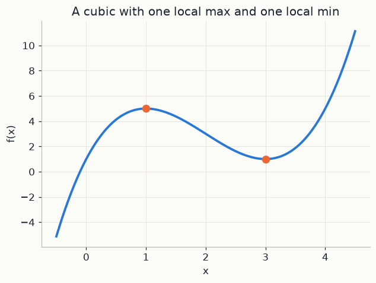
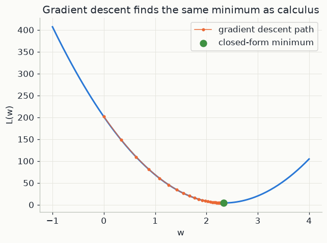

import numpy as np
import matplotlib.pyplot as plt
import sympy as sp
import mlutils
mlutils.set_style()1. Slopes, critical points and curvature
Picture walking along the graph of a function f(x). The derivative measures how steep the ground is at each point: the rise over the run of a tiny step h, in the limit where the step shrinks to nothing:
f'(x) = \lim_{h \to 0} \frac{f(x+h) - f(x)}{h}
The fraction is the slope of the chord between x and x+h; as h shrinks, the chord becomes the tangent. For f(x) = x^2 at x = 3 the fraction is \big((3+h)^2 - 9\big)/h = (6h + h^2)/h = 6 + h. For h = 1, 0.1, 0.01 it equals 7, 6.1, 6.01, closing in on f'(3) = 6, which matches the rule f'(x) = 2x.
At the top of a hill or the bottom of a valley the ground is flat. So every smooth local maximum or minimum x^* satisfies
f'(x^*) = 0
Points where the derivative vanishes are called critical points. They are only candidates: f(x) = x^3 is flat at 0 yet keeps rising on both sides. To sort the candidates, zoom in with a Taylor expansion. Near any point x, a smooth function is well described by its value, its slope and its curvature:
f(x + h) \approx f(x) + f'(x)\,h + \tfrac12 f''(x)\,h^2
Here f''(x), the second derivative, is the slope of the slope: it measures how the graph bends. The three terms are a height, a straight tilt, and a parabola bending up or down. At a critical point the tilt is zero, so
f(x^* + h) - f(x^*) \approx \tfrac12 f''(x^*)\,h^2
Since h^2 > 0 for every small step, left or right, the sign of f''(x^*) decides everything. This is the second-derivative test:
- f''(x^*) > 0: every nearby point is higher, so x^* is a local minimum.
- f''(x^*) < 0: every nearby point is lower, so x^* is a local maximum.
- f''(x^*) = 0: the parabola term vanishes and the test is silent. Higher-order terms decide: x^3 has an inflection point at 0, x^4 a minimum.
2. Several variables: gradient and Hessian
A model usually has many parameters, collected in a vector w = (w_1, \dots, w_p); L(w) returns one number. The partial derivative \partial L/\partial w_j is the ordinary derivative along coordinate j, all other coordinates held fixed. Stacking the p of them gives the gradient, a p \times 1 vector:
\nabla L(w) = \Big(\frac{\partial L}{\partial w_1}, \dots, \frac{\partial L}{\partial w_p}\Big)^{\!\top}
The gradient points in the direction of steepest ascent, and its length is the slope in that direction. The second derivatives form the symmetric p \times p Hessian matrix H, with entries H_{jk} = \partial^2 L / \partial w_j \partial w_k: it records how the surface bends in every direction. For a small step vector h (p \times 1), the Taylor expansion keeps its shape:
L(w + h) \approx L(w) + \nabla L(w)^\top h + \tfrac12\, h^\top H\, h
A critical point now means \nabla L(w^*) = 0: all p slopes vanish together. There, L(w^* + h) - L(w^*) \approx \tfrac12 h^\top H h. If h^\top H h > 0 for every nonzero h (H is positive definite), every direction leads uphill and w^* is a local minimum. If it is negative for every h, a local maximum. If the sign depends on the direction, w^* is a saddle point.
Two examples. L = w_1^2 + 3w_2^2 has gradient (2w_1, 6w_2), zero at the origin, and h^\top H h = 2h_1^2 + 6h_2^2 > 0: a minimum, the bottom of a bowl. L = w_1^2 - w_2^2 gives h^\top H h = 2h_1^2 - 2h_2^2, positive along w_1 and negative along w_2: a saddle, shaped like a mountain pass.
3. Training as minimisation: gradient descent
A model's loss function L(w) measures how wrong its predictions are on the training data, as a function of its parameters w; the data stay fixed. Training means finding the w that makes L smallest. Solving \nabla L = 0 on paper is rarely possible, so we walk downhill instead.
Deriving the step. Keep only the first-order Taylor term (one parameter first): L(w + h) \approx L(w) + L'(w)\,h. Choose the step h = -\eta\, L'(w) with a small number \eta > 0. Then
L\big(w - \eta L'(w)\big) \approx L(w) - \eta\, L'(w)^2
The change -\eta L'(w)^2 is negative whenever the slope is not zero, so the step lowers the loss. This gives gradient descent:
w \leftarrow w - \eta\, L'(w)
The positive number \eta is the learning rate, or step size. With many parameters the rule is w \leftarrow w - \eta \nabla L(w), and the loss drops by about \eta \lVert \nabla L \rVert^2 per step.
How big a step? The Taylor argument only holds for small steps. A quadratic shows exactly what happens. Take L(w) = a\,(w - w^*)^2 with curvature a > 0 and minimum at w^*. Its slope is L'(w) = 2a(w - w^*), so one step gives
w_{\text{new}} - w^* = (w - w^*) - 2a\eta\,(w - w^*) = (1 - 2a\eta)\,(w - w^*)
Each step multiplies the signed distance to the minimum by the same number 1 - 2a\eta, so t steps multiply it by (1 - 2a\eta)^t. Its size, the contraction factor \lvert 1 - 2a\eta \rvert, tells the whole story:
- \eta tiny: the factor is close to 1 and progress is slow.
- \eta = 1/(2a): the factor is 0 and one step lands exactly on w^*.
- 1/(2a) < \eta < 1/a: 1 - 2a\eta lies between -1 and 0, so w overshoots, zig-zags from side to side, and still converges.
- \eta > 1/a: \lvert 1 - 2a\eta \rvert > 1, every step overshoots further than the last, and the loss explodes.
Near any minimum, Taylor says a smooth loss looks like such a quadratic, with a = \tfrac12 L''(w^*). So the more sharply the loss curves, the smaller the learning rate must be.
Convexity. A function is convex if the chord between any two points of its graph never passes below the graph; in one variable this means L''(w) \ge 0 everywhere. Then every local minimum is a global minimum. Suppose w were a local minimum but some v had L(v) < L(w). On the segment between them convexity gives L\big(w + \lambda(v - w)\big) \le (1-\lambda)L(w) + \lambda L(v) < L(w) for every 0 < \lambda \le 1, even for tiny \lambda, right next to w: a contradiction. The squared-error loss of linear regression is convex, so gradient descent cannot get stuck there; the loss of a neural network is not.
Three steps by hand. Take L(w) = (w - 3)^2, so a = 1 and w^* = 3, with \eta = 0.25 and the start w_0 = 0. The slope is L'(w) = 2(w - 3) and the factor is 1 - 2 \times 1 \times 0.25 = 0.5.
| step t | w_t | L(w_t) | L'(w_t) | -\eta\,L'(w_t) | w_{t+1} |
|---|---|---|---|---|---|
| 0 | 0 | 9 | −6 | +1.5 | 1.5 |
| 1 | 1.5 | 2.25 | −3 | +0.75 | 2.25 |
| 2 | 2.25 | 0.5625 | −1.5 | +0.375 | 2.625 |
| 3 | 2.625 | 0.140625 |
The distance to the minimum goes 3, 1.5, 0.75, 0.375: halved at every step, as the factor predicts. With \eta = 1.25 instead, the factor is 1 - 2.5 = -1.5 and the same start gives w = 0, 7.5, -3.75, 13.125: the iterates jump across the minimum and fly away.
In the code below. sympy computes f_prime and f_double for a cubic, critical_points solves f'(x) = 0, and a loop applies the second-derivative test. Then L is the mean squared error L(w) = \frac1n\sum_i (y_i - w x_i)^2 of a line through the origin, for n = 50 simulated points x_data, y_data. Expanding the square and completing it shows that this is exactly the quadratic above, plus a constant that does not affect the steps:
L(w) = a\,w^2 - 2b\,w + c = a\Big(w - \frac{b}{a}\Big)^2 + c - \frac{b^2}{a}, \qquad a = \frac1n\sum_i x_i^2,\ \ b = \frac1n\sum_i x_i y_i,\ \ c = \frac1n\sum_i y_i^2
So w^* = b/a is what w_star finds, and w_gd follows the update rule with \eta = lr = 0.002. For these data a \approx 36, so each step multiplies the error by about 1 - 2 \times 36 \times 0.002 \approx 0.86, and 200 steps shrink it to less than 10^{-13} of its starting size.
4. Critical points, by hand
A smooth function's slope is zero at each of its local peaks and valleys (Section 1). Take a toy cubic:
f(x) = x^3 - 6x^2 + 9x + 1
sympy can differentiate it symbolically, the same way you would on paper.
x = sp.symbols("x")
f = x**3 - 6*x**2 + 9*x + 1
f_prime = sp.diff(f, x)
f_double = sp.diff(f_prime, x)
print("f (x) =", f)
print("f'(x) =", f_prime)
print("f''(x) =", f_double)f (x) = x**3 - 6*x**2 + 9*x + 1 f'(x) = 3*x**2 - 12*x + 9 f''(x) = 6*x - 12
critical_points = sp.solve(sp.Eq(f_prime, 0), x)
critical_points[1, 3]
f'(x) = 0 has two solutions: the slope is flat at x=1 and x=3. Those are the only candidates for a local max or min — everywhere else the function is strictly increasing or decreasing, so it can't turn around.
5. The second-derivative test
To tell a peak from a valley, look at how the slope itself is changing (Section 1 derives this from the Taylor expansion):
- f''(x) < 0: the slope is decreasing through zero → local maximum.
- f''(x) > 0: the slope is increasing through zero → local minimum.
for c in critical_points:
second = f_double.subs(x, c)
kind = "local maximum" if second < 0 else "local minimum"
print(f"x = {c}: f''(x) = {second} -> {kind} (f({c}) = {f.subs(x, c)})")x = 1: f''(x) = -6 -> local maximum (f(1) = 5) x = 3: f''(x) = 6 -> local minimum (f(3) = 1)
f_num = sp.lambdify(x, f, "numpy")
xs = np.linspace(-0.5, 4.5, 400)
fig, ax = plt.subplots(figsize=(6.5, 4.5))
ax.plot(xs, f_num(xs), color=mlutils.BLUE, lw=2.5)
for c in critical_points:
cv = float(c)
ax.scatter([cv], [f_num(cv)], color=mlutils.ORANGE, zorder=5, s=60)
ax.set(xlabel="x", ylabel="f(x)", title="A cubic with one local max and one local min")[Text(0.5, 0, 'x'), Text(0, 0.5, 'f(x)'), Text(0.5, 1.0, 'A cubic with one local max and one local min')]

6. The same idea trains a model
Section 3 described training as minimising a loss function — usually a high-dimensional version of the picture above. Take the simplest case: fitting a single slope w through the origin to minimise the mean squared error
L(w) = \frac{1}{n}\sum_i (y_i - w x_i)^2
This is a parabola in w (one variable, easy to visualise), and its minimum has a closed form — set L'(w) = 0 and solve.
rng = np.random.default_rng(0)
n = 50
x_data = rng.uniform(0, 10, n)
y_data = 2.3 * x_data + rng.normal(0, 2, n)
w = sp.symbols("w")
L = sum((y_data[i] - w * x_data[i])**2 for i in range(n)) / n
L_prime = sp.diff(L, w)
w_star = sp.solve(sp.Eq(L_prime, 0), w)[0]
print(f"closed-form minimiser: w* = {float(w_star):.4f}")closed-form minimiser: w* = 2.3342
# gradient descent: repeatedly step "downhill" instead of solving analytically
L_prime_num = sp.lambdify(w, L_prime, "numpy")
w_gd, lr = 0.0, 0.002
path = [w_gd]
for _ in range(200):
w_gd = w_gd - lr * L_prime_num(w_gd)
path.append(w_gd)
print(f"gradient descent after 200 steps: w = {w_gd:.4f} (target {float(w_star):.4f})")
L_num = sp.lambdify(w, L, "numpy")
ws = np.linspace(-1, 4, 200)
fig, ax = plt.subplots(figsize=(6.5, 4.5))
ax.plot(ws, L_num(ws), color=mlutils.BLUE, lw=2)
ax.plot(path, [L_num(p) for p in path], color=mlutils.ORANGE, marker="o", ms=3, lw=1,
label="gradient descent path")
ax.scatter([float(w_star)], [L_num(float(w_star))], color=mlutils.GREEN, zorder=5, s=70,
label="closed-form minimum")
ax.set(xlabel="w", ylabel="L(w)", title="Gradient descent finds the same minimum as calculus")
ax.legend()gradient descent after 200 steps: w = 2.3342 (target 2.3342) <matplotlib.legend.Legend at 0x22d29f6c830>

Both routes land in the same place: solving L'(w)=0 directly, or taking small steps opposite the gradient until it flattens out. Closed-form solutions exist for linear regression; almost nothing else in this course has one, which is why gradient descent (chapter 06) and backpropagation (chapter 07 onward) matter.
Exercises
Exercise 1: A function with two local minima
Let g(x) = x^4 - 4x^2. Find all critical points and classify each with the second-derivative test. (Hint: the second-derivative test is inconclusive at a saddle/inflection point, i.e. when f''=0 too — check whether that happens here.)
Solution
g = x**4 - 4*x**2
g_prime = sp.diff(g, x)
g_double = sp.diff(g_prime, x)
pts = sp.solve(sp.Eq(g_prime, 0), x)
for c in pts:
print(c, g_double.subs(x, c))
# x = -sqrt(2), sqrt(2): f''>0 -> local minima; x = 0: f''<0 -> local maximum
Exercise 2: Learning rate too large
Rerun the gradient descent cell with lr = 0.02 (10x larger), then with lr = 0.03.
Before running, predict what happens from the contraction factor 1 - 2a\eta of
Section 3, with a = np.mean(x_data**2). Relate the result to what "diverging
loss" looks like during neural-network training in later chapters.
Solution
Here a \approx 36.3, so the threshold is \eta = 1/a \approx 0.028. With lr = 0.02
the factor is about -0.45: the path jumps from one side of the minimum to the other
but still converges. With lr = 0.03 the factor is about -1.18: each step
overshoots further than the last and the loss increases every iteration instead of
decreasing — the numerical analogue of an unstable difference equation. This is exactly what an exploding training loss means
in chapters 06-09.
Key takeaways
- A function's local extrema occur where its derivative is zero; the sign of the second derivative there tells a maximum from a minimum.
- Training a model is minimising a loss function over its parameters — the same calculus, just in (often thousands of) more dimensions.
- Gradient descent — repeatedly stepping opposite the gradient — finds the same minimum as solving L'=0 directly, without ever writing down a closed form. That's the only option once a closed form doesn't exist.